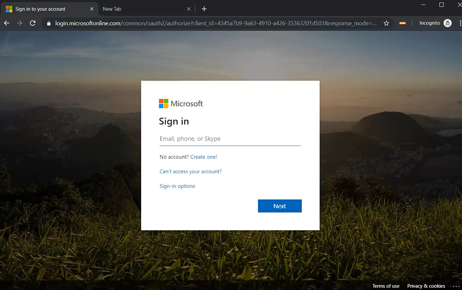
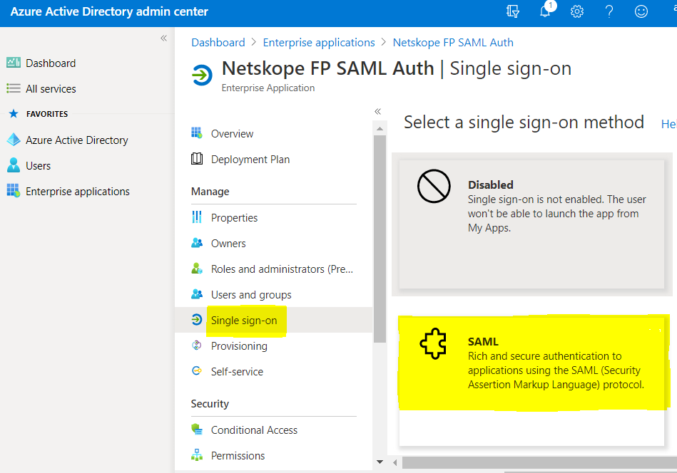
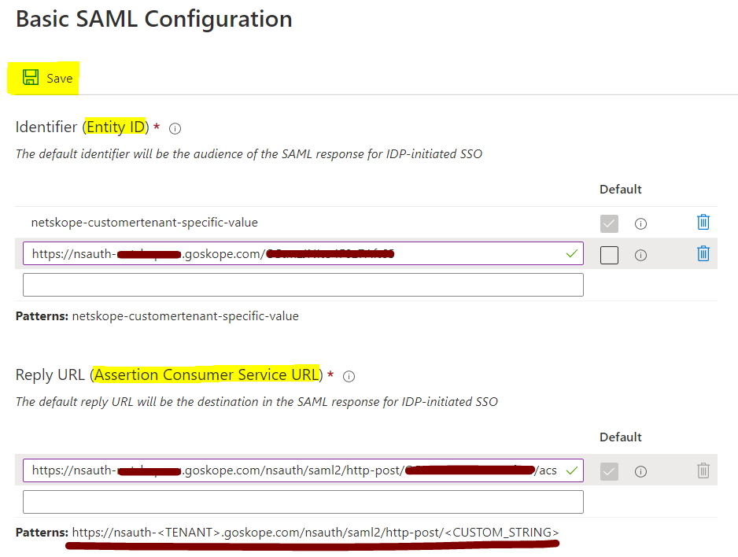
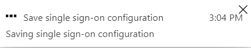
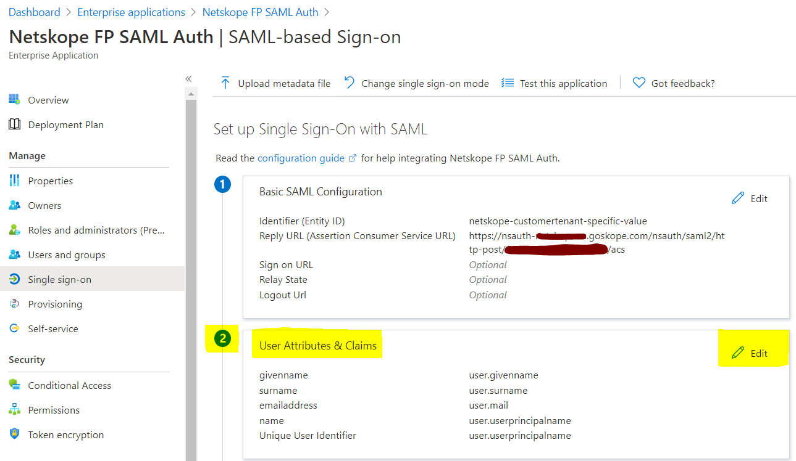
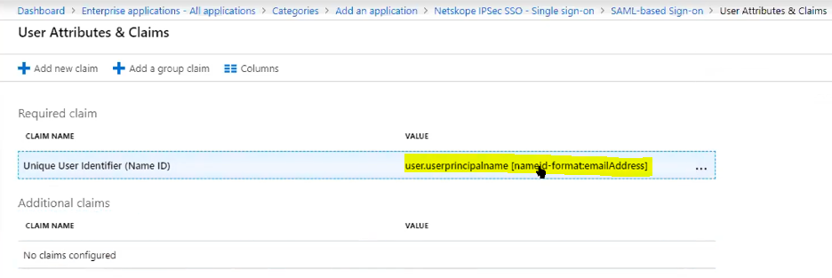
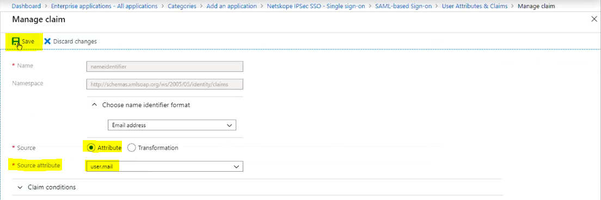
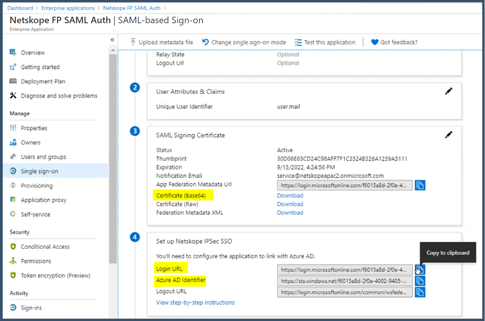
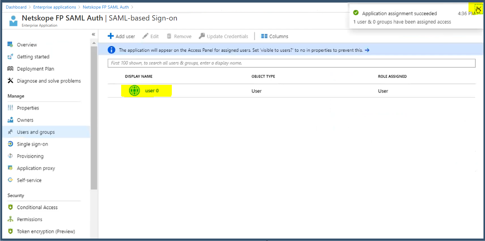

Configure an Enterprise Application in Microsoft Azure Active Directory for SAML Auth
Login to the Microsoft Azure portal https://portal.azure.com
 Go to Azure Active Directory > Enterprise Applications > All Applications and click New application.

Enter Netskope in the search bar. Select Netskope User Authentication. Enter a name, like Netskope FP SAML Auth, (for example). Click Create.

Note
If you are still using the old app gallery experience, then:
Select Netskope User Authentication.
Enter a name, like Netskope FP SAML Auth, (for example).
Click Add.

Select Single sign-on > SAML.
 Click Edit to enter the Basic SAML Configuration parameters.

Enter Netskope Entity ID and Netskope ACS URL copied from the Netskope UI in the required fields, and then click Save.
  
Click on the x icon to close SAML section.
You will be prompted to test SSO. Select No, I’ll test later.

Go to and edit User Attributes & Claims section.
 Delete all the default Additional claims. You only need the Required Claim.
Select the value to edit the Unique User Identifier (Name ID) field.
 Set the Source attribute as user.mail and click Save.
 user.mail is set as the claim value for Name ID. Click on the x to close this section.

Download the certificate in Certificate (Base64) format, and copy the Login URL and Azure AD Identifier values. These need to be entered into the Netskope Forward Proxy - SAML settings page later on.
 Next assign users who will log in using the Azure SAML Auth.
Go to Users and groups > Add user/group.

Select Users and groups.
Select the users, and then click Select.

Click Assign.
If you want to use Group assignments, then you need at least a Microsoft P2 license or above. This may not apply in the future if Microsoft updates their software licensing models.

The User has been successfully assigned to the SAML Auth application.
 Log off the Azure portal.